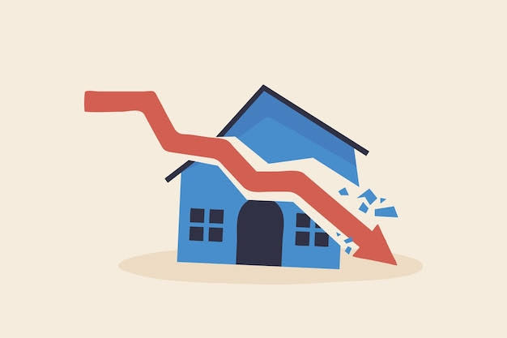

La ansiedad y la presión por el éxito en la juventud es uno de los temas más relevantes y estudiados de la psicología contemporánea. Este fenómeno responde a una combinación de factores culturales, sociales y tecnológicos que han transformado la forma en que los jóvenes perciben su valía y su futuro.
Tener metas es positivo, pero el problema aparece cuando el miedo a no cumplirlas ocupa todo el espacio. Reconocer las señales a tiempo permite buscar apoyo, organizar prioridades y cuidar la salud mental sin renunciar a los proyectos personales.
La idea arraigada de que el valor personal depende directamente del rendimiento académico, laboral o económico.
La exposición constante a vidas "perfectas" o logros prematuros en plataformas digitales genera una comparación social dañina 4 y el fenómeno conocido como FOMO (temor a perderse de algo).
Un mercado laboral competitivo, crisis de vivienda y exigencias académicas cada vez más altas aumentan el miedo al fracaso o a la inestabilidad.

Sentimiento persistente de no estar a la altura o de que los logros propios son cuestión de suerte.
La presión por hacerlo perfecto es tan alta que dificulta dar el primer paso.
Fatiga crónica, desmotivación y somatización del estrés (dolores de cabeza, insomnio, problemas digestivos) a edades muy tempranas.
Separar los objetivos personales de las expectativas externas o familiares.
Establecer límites en el uso de redes sociales para mitigar la comparación constante.
Aprender a decir "no" y validar el descanso sin culpa como una necesidad, no como un premio.
La terapia cognitivo-conductual ofrece herramientas efectivas para gestionar la distorsión del pensamiento y la autorregulación emocional.
La siguiente tabla muestra algunas situaciones frecuentes. No sustituye la orientación de un profesional, pero puede servir como guía para identificar cuándo conviene hacer una pausa y pedir ayuda.
| Situación | Señales frecuentes | Acción recomendada |
|---|---|---|
| Presión académica | Insomnio, preocupación constante por las calificaciones y dificultad para concentrarse. | Dividir las tareas en pasos pequeños, planear descansos y hablar con docentes o familiares. |
| Comparación en redes sociales | Sentirse insuficiente al ver los logros de otras personas o revisar las redes de forma compulsiva. | Limitar el tiempo de pantalla, dejar de seguir contenido que afecte el ánimo y recordar que las redes muestran solo una parte de la realidad. |
| Agotamiento por exceso de actividades | Cansancio permanente, irritabilidad, pérdida de motivación y abandono de actividades agradables. | Revisar compromisos, priorizar lo esencial y reservar tiempo para dormir, comer y convivir. |
| Ansiedad intensa o persistente | Ataques de pánico, aislamiento, pensamientos negativos recurrentes o malestar que interfiere con la vida diaria. | Buscar acompañamiento psicológico o médico. Pedir ayuda es una decisión de cuidado, no un fracaso. |
El éxito no tiene una sola definición ni un calendario universal. Cada persona avanza a un ritmo distinto, y descansar, cambiar de rumbo o pedir apoyo también forman parte del aprendizaje. Construir objetivos realistas y celebrar los avances pequeños ayuda a reducir la presión y a mantener una relación más sana con el futuro.
Estudio de la University College London (Publicado en The Lancet Child & Adolescent Health):
Ir a LavanguardiaInforme Healthy Minds Study (Universidad de Michigan)
Ir a University of Michigan